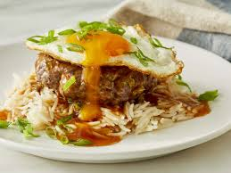

Big Mac Bowl

Description
A Hawaiian comfort-food classic, the Loco Moco has been one of my personal favorite meals in the past few months. The dish includes white rice, ground beef, a homemade gravy, and a nice fried egg on top. This is hearty, filling, and so damn good. If you're into SPAM (Not a big fan of the canned meats myself) definitely give a slice a sear and incorporate it into this Hawaiian Classic.
Ingredients
- 85 / 15 Ground Beef
- Jasmine Rice
- Diced Onion
- Corn Starch
- Butter
- Green Onion
- Beef Stock
- Worcestershire Sauce
- Soy Sauce
- Season Blend: Salt, Pepper, Garlic
Steps
- Form beef patties and sear them in the oil of your choosing. I prefer butter.
- Combine 1/4 cup beef stock, 2 tbsp of soy sauce, 2 tbsp of W sauce, 2 tbsp corn starch, 2 tbsp butter and 1 tbsp ketchup into a pot and slowly cook together until a gravy like sauce is formed. Feel free to add onion / mushroom to your liking.
- Prepare your white rice and top the rice with your patties.
- Fry up an egg over medium / medium - hi heat until the edges are crispy, but the yolk is runny.
- Top the rice / beef with the loco moco cravy, then add the egg on top. Garnish with green onion and enjoy!